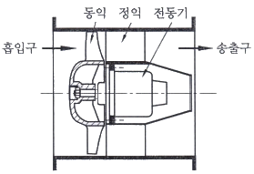
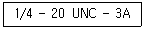
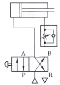
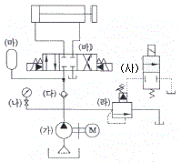
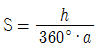
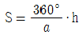
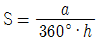
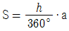

설비보전기사(구) (2014-09-20 기출문제)
1과목: 설비 진단 및 계측
1. 크고 작은 두 소리를 동시에 들을 때 큰 소리만 듣고 작은 소리는 듣지 못하는 현상을 마스킹 효과라 한다. 이에 대한 설명 중 틀린 것은?
- 마스킹은 음파의 간섭에 의해 일어난다.
- 고음이 저음을 잘 마스킹 한다.
- 두 음의 주파수가 비슷할 때 마스킹 효과가 커진다.
- 두 음의 주파수가 거의 같을 때는 맥동이 생겨 마스킹 효과가 감소한다.
(정답률: 86%)

2. 음(소음)의 발생과 특성에 관한 분류 중 옳은 것은?
- 이차 고체음 – 기계의 진동에 지반 진동을 수반하여 발생하는 소리
- 일차 고체음 – 기계 본체의 진동에 의한 소리
- 맥동음 – 압축기, 진공펌프, 엔진 배기음
- 난류음 – 타악기, 스피커음
(정답률: 83%)
3. 동적배율에 관한 설명으로 틀린 것은?
- 고무의 동적배율은 1 이상이다.
- 고무의 영률이 커질수록 동적배율은 작아진다.
- 정적 스프링 정수가 커질수록 동적배율은 작아진다.
- 동적 스프링 정수가 커질수록 동적배율은 커진다.
(정답률: 57%)
4. 자장을 만들기 위하여 고정 코일에 전류를 공급하여 자장내에 연철편에 전자력이 발생하도록 한 계기는?
- 가동 코일형 계기
- 가동 철판형 계기
- 정전형 계기
- 정류형 계기
(정답률: 70%)
5. 유체의 흐름 속에 날개가 있는 회전자를 설치하여 그 회전수를 검출해서 유량을 구하는 식은?
- 터빈식 유량계
- 와류식 유량계
- 용적식 유량계
- 면적식 유량계
(정답률: 80%)
6. 고유진동 주파수에 질량 및 강성에 관한 설명 중 옳은 것은?
- 고유 진동 주파수는 질량과 강성에 모두 비례한다.
- 고유 진동 주파수는 질량과 강성에 모두 반비례한다.
- 고유 진동 주파수는 질량에 비례하고 강성에 반비례한다.
- 고유 진동 주파수는 질량에 반비례하고 강성에 비례한다.
(정답률: 70%)
7. 진동 시스템에 대한 댐핑 처리가 필요한 경우로 가장 거리가 먼 것은?
- 시스템이 고유 진동수에서 강제 진동을 하는 경우
- 시스템이 많은 주파수 성분을 갖는 힘에 의해 강제 진동되는 경우
- 시스템이 충격과 같은 힘에 의해서 진동되는 경우
- 시스템이 고유 진동수에서 자유 진동되는 경우
(정답률: 69%)
8. 음파의 종류에서 음원에서 모든 방햐으로 동일한 에너지를 방출할 때 발생하는 파는?
- 평면파
- 구면파
- 발산파
- 진행파
(정답률: 79%)
9. 소음계의 사용시 유의사항으로 틀린 것은?
- 마이크로폰의 연결선은 너무 긴 경우 전선의 저항으로 오차가 커지므로 1.5m 이하로 한다.
- 마이크로폰은 소음계 본체에서 분리 삼각대에 장착하여 연장코드를 사용한다.
- 마이크로폰이 소음계에 부착된 것은 측정자의 인체 반사음에 영향을 받아 오차가 발생하기 쉽다.
- 소음계 본체에 너무 가까이 접근하면 지시에 오차가 발생하기 때문에 주의해야 한다.
(정답률: 76%)
10. 미지 저항을 측정하기 위한 휘트스톤 브리지 회로에 사용되는 측정방법은?
- 편위법
- 영위법
- 치환법
- 보상법
(정답률: 68%)
11. 다음 중 설비진단 기법에 해당되지 않는 것은?
- 진동법
- 오일분석법
- 전기분석법
- 응력법
(정답률: 69%)
12. 계측계에서 입력신호인 측정량이 시간적으로 변동할 때, 출력신호인 계측기 지시 특성을 나타내는 것은?
- 부특성
- 정특성
- 동특성
- 변환특성
(정답률: 80%)
13. 회전기계의 이상을 판단하기 위해 실시하는 주파수 분석 중 포락선(Envelope)처리에 관한 설명으로 옳은 것은?
- 베어링의 결함 등을 검출할 때 사용한다.
- 시간에 묻혀 잘 나타나지 않는 주기 신호의 존재 확인에 사용한다.
- 자기 상관함수와 상호상관 함수가 있다.
- 회전기기의 불균일을 검출하기 위한 신호처리이다.
(정답률: 67%)
14. 흡음과 차음에 관한 설명 중 틀린 것은?
- 일반적으로 부드럽고 다공성표면을 갖는 재료는 높은 흡음율을 갖는다.
- 차음벽의 차음 효과는 투과율에 의해 결정된다.
- 차음벽 안쪽을 흡음재료로 처리하면 차음효과를 높일 수 있다.
- 흡음재료가 동일할 경우 일정한 흡음율을 가진다.
(정답률: 77%)
15. 재료의 흡음율을 나타내는 식으로 옳은 것은?
- 흡음율 = 입사에너지 / 흡수된 에너지
- 흡음율 = 흡수된 에너지 / 입사에너지
- 흡음율 = 투과된 에너지 / 입사에너지
- 흡음율 = 입사에너지 / 투과된 에너지
(정답률: 74%)
16. 회전체의 회전수를 측정하는 방법 중 자속 밀도의 변화를 이용하여 펄스 모양의 전압 신호를 인출하는 것으로써 내구성이 우수하고 전원을 필요로 하지 않는 특징이 있는 측정법은?
- 회전주기 측정법
- 주파수 계수법
- 전자식 검출법
- 광전식 검출법
(정답률: 75%)
17. 압력을 측정하기 위한 센서가 아닌 것은?
- 스트레인 게이지형 센서
- 정전용량형 센서
- 압전형 세라믹 센서
- 초음파형 센서
(정답률: 81%)
18. 진동 측정 시 주의사항으로 틀린 것은?
- 센서를 부착할 때 항상 동일 포인트에 부착할 것
- 항상 최신 센서의 측정기로 사용할 것
- 항상 같은 회전수일 때 측정할 것
- 항상 윤활조건을 동일하게 유지할 것
(정답률: 87%)
19. 소음의 중첩 원리가 적용되지 않는 것은?
- 맥놀이
- 공진
- 보강간섭
- 소멸간섭
(정답률: 72%)
20. 압전식 진동 가숙도 센서를 이용하여 수집할 수 없는 진동 자료는?
- 속도단위의 진동 값
- 주파수
- 축 중심선 변화
- 진동파형
(정답률: 74%)
2과목: 설비관리
21. 설비투자 및 대체의 경제성 평가를 할 때 대안 사이에서 조업비용이나 자본 비용 면에서 계산하여 판정하는 원가비교법에 해당되지 않는 것은?
- 제조원가비교법
- 연간 비용법
- 현가비교법
- 자본회수 기간법
(정답률: 68%)
22. 설비 프로젝트 투자 목적에서 설비의 갱신에 의한 경비절감을 위해 분류되는 프로젝트 투자는?
- 합리적 투자
- 확장 투자
- 제품 투자
- 전략적 투자
(정답률: 83%)
23. 계측작업 및 방법의 관리와 합리화를 위해서 실시하는 방법이 아닌 것은?
- 계측결과 활용방식의 설정
- 계측 작업의 표준화
- 계측 정밀도의 유지 및 향상
- 계측기의 사용 및 취급법의 적정화
(정답률: 57%)
24. 컴퓨터나 로봇에 전문적 기술을 부여하여 자동화 공장의 문제점을 인식하고 이를 해결하기 위한 방법을 스스로 찾아낼 수 있는 것은?
- 유연기술 시스템
- 지능기술 시스템
- 자동이송 라인
- 수치 제어 기계
(정답률: 87%)
25. 보전효과 측정을 위한 듀폰(Dupont)사에서 분류한 네가지 기본 요소에 해당되지 않는 것은?
- 계획
- 작업량
- 비용
- 품질
(정답률: 66%)
26. 설비를 목적에 따라 생산설비, 유틸리티설비, 수송설비, 관리설비 등으로 분류하는 이유로 가장 거리가 먼 것은?
- 설비 투자를 합리적으로 할 수 있다.
- 설비 원가 파악이 용이하다.
- 예산 통제 및 고장자산 관리가 편리하다.
- 생산 공장 능력을 파악하는데 편리하다.
(정답률: 53%)
27. 특성요인도 분석과 비교하여 PM분석에 관한 설명으로 옳은 것은?
- 포괄적으로 파악하여 해석이 복잡함
- 물리적 관점에서 과학적 사고를 가짐
- 각개 원인들을 나열식으로 열거함으로 누락 발생이 가능함
- 비계통적으로 나열하여 산발적으로 대책을 수립함
(정답률: 75%)
28. 설비보전 표준의 분류 중 정비 또는 일상보전 조건방법의 표준을 정한 것으로 정비 작업 종류에 따라 급유표준, 청소표준, 조정표준 등이 작성되는 것은?
- 설비 검사 표준
- 정비 표준
- 수리 표준
- 설비 성능 표준
(정답률: 73%)
29. 시스템의 잠재적 결함을 조직적으로 규명하고 조사하는 설계 기법의 하나로서, 설비 사용자에게도 설비의 끊임없는 평가와 개선을 실시할 수 있는 고장 유형, 영향 분석 기법은?
- FMECA 분석
- PM 분석
- QM 분석
- FTA 분석
(정답률: 74%)
30. 에너지 사용 효율을 높이기 위해 실시하는 열 관리 방법으로 틀린 것은?
- 연료는 사용 목적이 적합하며, 가격이 저렴하고 쉽게 확보할 수 있어야 한다.
- 연료의 저장 및 운반에서 성분의 변화, 품질의 저하, 발열 등의 연료 손실이 생기지 않도록 해야 한다.
- 연소의 합리화를 위하여 부하가 과대한 경우 연소실을 축소한다.
- 연소의 합리화를 위하여 부하가 과소한 경우 연료의 품질을 저하 시킨다.
(정답률: 67%)
31. 욕조 곡선상의 우발 고장기간에 발생되는 고장의 감소대책으로 가장 거리가 먼 것은?
- 최선의 예방보전
- 예비품 관리
- 극한 상황을 고려한 설계
- 교육훈련 강화
(정답률: 43%)
32. 자본의 효율적 사용을 위해 현재 사용 중인 낡은 기계의 계속 사용과 신기계의 대체라는 대안을 비교하여 설비대체 여부를 결정하는 방법은?
- PERT/CPM
- MAPI
- QFD
- 6 Sigma
(정답률: 70%)
33. 예방보전을 실시하는 공장에서는 휴지공사계획과 검사계획을 포함시키는데 이를 위한 일정계획을 위해서 사용하는 기법은?
- JIT
- TPM
- PERT & CPM
- MAPI
(정답률: 66%)
34. 설비보정방식의 형태에 따른 특정 중 설비마모 상태에 따라 경제성, 생산성 등을 고려하여 가장 적절한 수리 주기를 정하여 그 주기에 수리를 실시하는 것은?
- 상태기준보전
- 사후보전
- 시간기준보전
- 개량보전
(정답률: 51%)
35. 치공구를 설계하기 위한 방법으로 틀린 것은?
- 지그와 고정구 구성 부품의 표준화를 적극적으로 고려할 것
- 구조는 가능한 복잡하고 균형이 잡힌 형상을 갖고 있을 것
- 피공작물의 부착과 해체가 용이하며 공작 작업을 하기 쉬운 구조일 것
- 작업 시에 안전성, 신뢰성이 높다는 감각을 줄 수 있는 구조, 형상일 것
(정답률: 85%)
36. 종합적 생산보전(TPM : Total Productive Maintenance) 에 대한 설명 중 틀린 것은?
- TPM의 특징은 고장 제로(zero), 불량 제로 달성 목표에 있다.
- TPM의 목표는 설비, 사람, 현장이 변하지 않는데 있다.
- TPM의 목표는 현장의 체절 개선에 있다.
- TPM의 목표는 맨(man), 머신(machine), 시스템(system)을 극한 상태까지 높이는 데 있다.
(정답률: 73%)
37. 자재의 이동은 많으나 설비의 효율을 높이고, 유용성을 높인다는 측면에서의 장점과 다품종소량생산인 경우에 이용되는 설비배치 방법은?
- 제품별 배치
- 공정별 배치
- GT 배치
- 고정 위치 배치
(정답률: 67%)
38. 설비관리에 대한 설명 중 가장 거리가 먼 것은?
- 사용설비의 보전도 유지를 포함한 생산보전 활동
- 설비 자산의 효율적 관리
- 끊임없는 설비의 자동화율 극대화
- 설비의 설계와 연계되는 보전도 향상
(정답률: 82%)
39. 회사의 경영목표 달성을 위한 설비관리의 역할, 실시 방안, 개별설비의 보전 정책, 설비의 최적화 관리에서 이르기까지 정책 의사 결정을 포함하는 일반 관리기능은?
- 보전 업무의 계획, 일정관리 및 통제
- 설비 성능 분석
- 설비 진단 기술 이전 및 개발
- 보전기술 개발 및 매뉴얼 갱신
(정답률: 70%)
40. 품질 개선활동을 위하여 불량품, 결점, 사고 건수 등의 현상이나 원인 별로 데이터를 내고 수량이 많은 순서로 나열하여 크기를 막대그래프로 나타낸 분석법은?
- 히스토그램
- 관리도
- 파레토도
- 산점도
(정답률: 74%)
3과목: 기계일반 및 기계보전
41. 내열성과 내화학성이 좋고 자체윤활성을 보유하였으며, 다양한 운전조건에서 뛰어난 성능을 갖는 패킹재료는?
- 그라파이트
- 테프론
- 천연섬유소
- 유리섬유
(정답률: 82%)
42. 너트의 일부를 절삭하여 미리 내측으로 변형을 준 후 볼트에 체결할 때 나사부가 압착하게 되는 이완방지법은?
- 절삭너트에 의한 방법
- 로크너트에 의한 방법
- 특수너트에 의한 방법
- 분할 핀 고정에 의한 방법
(정답률: 77%)
43. 체인을 거는 방법으로 틀린 것은?
- 두 축의 스프로킷 휠은 동일 평면에 있어야 한다.
- 수직으로 체인을 걸 때 큰 스프로킷 휠이 아래에 오도록 한다.
- 수평으로 체인을 걸 때 이완측이 위로 오면 접촉각이 커지므로 벗겨지지 않는다.
- 이완측에는 긴장풀리를 쓰는 경우도 있다.
(정답률: 62%)
44. 펌프 흡입관에 대한 설명으로 틀린 것은?
- 관의 길이는 짧고 곡관의 수는 적게 한다.
- 흡입관 끝에 스트레이너를 설치한다.
- 배관은 펌프를 향해 1/150 올림 구배를 한다.
- 흡입관에서 편류나 와류가 발생하지 못하게 한다.
(정답률: 84%)
45. 펌프 우전 시 캐비테이션(cavitation) 발생 없이 안전하게 운전되고 있는가를 나타내는 척도로 사용되는 것은?
- NS(nonspecific speed)
- NPSH(net positive suction head)
- MAPI(machinery and allied products institute)
- HP(horse power)
(정답률: 71%)
46. 수격현상의 방지 방법으로 틀린 것은?
- 펌프의 흡입수두를 낮춘다.
- 플라이휠 장치를 저하시킨다.
- 관로 유속을 저하시킨다.
- 서지탱크를 설치한다.
(정답률: 48%)
47. 다음 측정기 중 비교 측정기에 속하지 않는 것은?
- 옵티미터
- 버니어 캘리퍼스
- 미니미터
- 전기마이크로미터
(정답률: 79%)
48. 드릴링 머신의 기본 작업이 아닌 것은?
- 스폿 페이싱(Spot facing)
- 카운터 보링(Counter boring)
- 리밍(Reaming)
- 슬로팅(Slotting)
(정답률: 63%)
49. 베벨기어의 제도 방법에 관하여 틀린 것은?
- 정면도 잇 봉우리선과 이골선 : 굵은 실선
- 정면도 피치선 : 가는이점쇄선
- 측면도 피치원 : 가는일점쇄선
- 측면도 잇 봉우리원 내단부와 외단부 : 굵은 실선
(정답률: 59%)
50. 그림에서 나타낸 축류송풍기의 특성으로 틀린 것은?

- 정익은 회전방향의 흐름을 정압으로 회수하고 효율을 높인다.
- 풍량이 커질수록 축 동력도 상승한다.
- 풍량은 동익의 각도와 회전속도를 조절하여 제어한다.
- 설치공간이 타 송풍기에 비하여 상당히 적다.
(정답률: 57%)
51. 기어의 손상 중 표면피로가 아닌 것은?
- 초기피칭
- 스코어링
- 박리
- 파괴적피칭
(정답률: 67%)
52. 원통에 감긴 실을 잡아당기면서 풀 때 실이 그리는 곡선으로서, 대부분 기어에 사용되고 있는 곡선은?
- 사이클로이드 치형곡선
- 인벌류트 치형곡선
- 노비코프 치형곡선
- 에피사이클로이드 치형곡선
(정답률: 69%)
53. 스크레이퍼(scraper)작업의 주된 목적은?
- 기계 가공한 면을 더욱 정밀하게 다듬질하기 위해
- 열처리 경화된 강철을 정밀하게 다듬질하기 위해
- 기계가공이 어려운 불규칙한 형상을 다듬질하기 위해
- 기계가공 전 표면을 마무리하기 위해
(정답률: 77%)
54. 아래 나사의 표시 방법에 관한 설명 중 옳은 것은?

- 유니파이 가는 나사
- 피치가 1/4 mm인 나사
- 3급의 암나사
- 정밀도가 높은 3급인 수나사
(정답률: 61%)
55. 키가 전달할 수 있는 토크 중 크기가 큰 순서대로 바르게 나열한 것은?
- 묻힘키, 스플라인, 안장키, 평키
- 평키, 안장키, 묻힘키, 스플라인
- 스플라인, 묻힘키, 평키, 안장키
- 안장키, 묻힘키, 스플라인, 평키
(정답률: 65%)
56. 아크 용접 시 아크 쏠림의 방지 대책으로 옳은 것은?
- 교류용접을 하지 않고 직류용접을 할 것
- 접지점을 될 수 있는 대로 용접부에 가까이 할 것
- 아크를 길게 할 것
- 받침쇠, 긴 가접부, 이음의 처음과 끝에 엔드 탭을 이용할 것
(정답률: 63%)
57. 볼 베어링에서 베어링 하중을 1/2로 하면 수명을 몇 배로 되는가?
- 4배
- 6배
- 8배
- 10배
(정답률: 70%)
58. 기어 감속기를 분류할 때 다음 중 교쇄 축형 감속기에 속하는 것은?
- 스퍼어기어
- 헬리컬기어
- 웜기어
- 스트레이트 베벨기어
(정답률: 62%)
59. 벨트 전동 장치에서 전달 동력에 대한 설명 중 틀린 것은?
- 마찰계수의 값이 크면 클수록 큰 동력을 전달시킬 수 있다.
- 접촉각이 클수록 큰 동력을 전달시킬 수 있다.
- 원심장력이 크면 클수록 전달 동력이 증가된다.
- 장력비가 클수록 전달 동력이 커진다.
(정답률: 54%)
60. 운동제어용 기계요소로 래칫 휠(ratchet wheel)의 역할 중 가장 거리가 먼 것은?
- 역전 방지 작용
- 조속 작용
- 나눔 작용
- 완충 작용
(정답률: 52%)
4과목: 윤활관리
61. 만능 그리스라고 하는 고급그리스로서 내열성, 내수성, 기계적 안정성이 우수하며 사용온도한계는 –20 ~ 130℃로 광범위한 용도로 사용되는 그리스는?
- 나트륨비누기 그리스
- 알루미늄비누기 그리스
- 칼슘비누기 그리스
- 리튬비누기 그리스
(정답률: 68%)
62. 윤활업무 중 윤활 실시 부문에서 윤활담당자의 업무와 급유원의 업무로 나누어 볼 때, 급유원의 업무로 가장 거리가 먼 것은? (단, 계획업무와 실시업무를 구분시행 할 경우)
- 기계설비에 있어서 윤활면의 일상 점검, 급유
- 급유장치의 운전 및 간단한 보수
- 표준 유량 결정 및 윤활작업 예정표 작성
- 윤활제의 육안검사 및 간단한 윤활제 교환
(정답률: 78%)
63. 윤활유의 유화되는 원인으로 가장 거리가 먼 것은?
- 기름의 산화가 상당히 일어났을 경우
- 수분과의 접촉이 많을 경우
- 운전 조건이 가혹해서 탄화수소분의 변질을 가져왔을 경우
- 이물질분에 의해 저점도유에 이르렀을 경우
(정답률: 54%)
64. 윤활기술자가 라인적 조직관계가 있는 경우, 윤활기술자의 직무로 가장 거리가 먼 것은?
- 급유장치의 보수와 설치
- 사용 윤활유의 선정 및 품질관리
- 윤활관계의 개선 시험
- 구매경비의 절약
(정답률: 68%)
65. 고하중 기어나 극압성이 큰 압연기 등에 사용되는 윤활유로 적절한 것은?
- 마일드 EP형 기어유
- 레귤러형 기어유
- 웜형 기어유
- 다목적용 기어유
(정답률: 77%)
66. 스퍼기어, 헬리컬기어, 베벨기어 등 밀폐식 기어 장치의 급유법으로 가장 적합한 것은?
- 순환급유
- 적하급유
- 손급유
- 도포급유
(정답률: 74%)
67. 기어 윤활에 관한 설명 중 틀린 것은?
- 고속기어에는 저점도의 윤활유가 적합하다.
- 웜 기어는 미끄럼 속도가 빠르고 운전 온도도 높게 되므로 산화 안정성이 우수한 순광유가 일반적으로 사용된다.
- 기어는 높은 하중을 받아 미끄러질 때 마찰면 마모를 방지하기 위하여 내하중이 있는 극압유가 요구된다.
- 하이포이드 기어는 일반적으로 중하중을 받으므로 불활성 극압 윤활유가 적당하다.
(정답률: 67%)
68. 윤활유의 인화점 시험방법에 해당하는 것은?
- 앵글러(Engler)
- 태그(Tag) 밀폐식
- 레드우드(Redwood)
- 세이볼트 유니버설(Saybolt universal)
(정답률: 68%)
69. 온도 변화에 따른 점도에 변화를 적게 하기 위하여 사용되는 첨가제는?
- 청정 분산제
- 산화 방지제
- 점도지수 향상제
- 유동점 강화제
(정답률: 77%)
70. 그리스의 성질인 주도에 대한 설명 중 틀린 것은?
- 윤활유의 점도에 해당하는 것으로서 무르고 단단한 정도를 나타낸 값이다.
- 미국 윤활그리스협회(NLGI)는 주도번호 000호부터 6호 까지 9종류로 분류하고 있으며 000호는 액상, 6호는 고상이다.
- 주도는 기유 점도와는 독립된 성질이며, 오히려 증주제의 종류와 양에 관계가 있다.
- 주도와 기유점도는 온도와는 무관하며, 증주제가 같으면 내열성을 나타내는 적점은 주도가 바뀌어도 별로 변하지 않는다.
(정답률: 58%)
71. 유압 펌프에서 고점도유 사용 시 나타나는 현상으로 가장 거리가 먼 것은?
- 유압 펌프의 용적 효율 저하
- 캐비테이션의 발생
- 축입력(軸入力)의 증가
- 유동, 교반 저항의 증가
(정답률: 44%)
72. 베어링의 마찰면이 일정치 않은 상황에서 국부적인 고하중이 걸릴 때 작용하는 윤활유의 기능은?
- 마찰 감소 작용
- 응력 분산 작용
- 밀봉 작용
- 세정 작용
(정답률: 79%)
73. 소방법에서 유류의 위험물에 대한 분류 중 윤활제에 해당되는 각 석유류에 관한 설명 중 틀린 것은?
- 제1석유류 : 아세톤, 나프타, 가솔린 등으로서 인화점이 20℃ 이하인 것
- 제2석유류 : 등유, 경유 등으로서 인화점이 21℃ 이상 69℃ 이하인 것
- 제3석유류 : 중유, 저점도 윤활유 등으로서 인화점이 70℃이상 200℃ 미만인 것
- 제4석유류 : 기계유, 실린더유 등으로서 인화점이 300℃ 이상인 것
(정답률: 71%)
74. 그리스와 윤활유를 비교 설명한 내용 중 틀린 것은?
- 회전저항은 윤활유보다 그리스 윤활 사용 시 상대적으로 크다.
- 윤활유를 사용한 기기는 그리스 윤활법에 비하여 밀봉장치가 복잡해진다.
- 윤활제의 교체 용이성은 윤활유가 그리스보다 간편하다.
- 그리스는 윤활유보다 냉각효과가 우수하다.
(정답률: 76%)
75. 윤활유의 열화 방지책으로 틀린 것은?
- 오일의 적정 점도유지를 위한 적당한 첨가제 사용을 권장한다.
- 신 기계 도입 시 쇠, 녹물, 방청제 등을 충분히 세척 후 사용한다.
- 월 1회 정도 세척을 실시 순환계통을 청정하게 유지한다.
- 사용유는 원심분리기 백토 처리 등의 재생법을 이용하여 재사용한다.
(정답률: 63%)
76. 미끄럼 베어링 급유법에 대한 설명으로 틀린 것은?
- 순환식은 베어링의 온도가 높아져 온도를 내리고자 할 경우에 적용된다.
- 유욕식은 링 급유, 체인 급유, 컬러 급유, 비말 급유 등의 방법이 있다.
- 전손식은 운전속도가 높을 때 주로 적용된다.
- 전손식은 적하 급유, 원심 급유법 등에서 쓰인다.
(정답률: 66%)
77. 기계설비의 운전 시 사고발생의 원인으로 윤활부위, 윤활조건, 윤활환경 등에 따른 분류로 나뉜다. 이 중 윤활 환경적 요인으로 가장 거리가 먼 것은?
- 오일의 열화와 오탁
- 전도열이 높은 경우
- 기온에 의한 현저한 온도변화
- 마찰면의 방열이 불충분한 경우
(정답률: 64%)
78. 일반적으로 윤활유의 적정점도를 선정하는 기준으로 틀린 것은?
- 윤활유의 점도를 선정할 때는 주로 운전온도, 하중, 운전속도를 고려한다.
- 하중이 클수록 고점도유를 사용한다.
- 운전온도(주위온도)가 높을수록 고점도유를 사용한다.
- 운전속도가 느릴수록 저점도유를 사용한다.
(정답률: 62%)
79. 액상 윤활유가 갖추어야 할 성질로 가장 거리가 먼 것은?
- Al, Na, Ca, Li, 벤톤 등의 증주제를 사용할 것
- 사용상태에서 충분한 점도를 가질 것
- 한계윤활상태를 견디어 낼 수 있는 유성(油性)이 있을 것
- 산화나 열에 대한 안정성이 높고 화학적으로 불활성 일 것
(정답률: 68%)
80. 베어링 허용회전수의 50%이상으로 회전할 때, 다음의 하우징 내부의 축 및 베어링을 제외한 공간용적에 대하여 충진하여야 할 가장 적절한 그리스 양은?
- 신유가 빠져 나올 때까지 충진한다.
- 100% 충진한다.
- 1/3 ~ 1/2정도 충진한다.
- 1/2 ~ 3/4정도 충진한다.
(정답률: 76%)
5과목: 공유압 및 자동화
81. 직각 좌표상에서 두 축을 동시에 제어할 때 두 축이 한 점에서 다른 점까지 움직이는 궤적을 원이 되도록 제어하는 방법은?
- 직선보간(linear interpolation)
- 티칭 플레이 백(teaching play back)
- 원호보간(circle interpolation)
- 머니퓰레이터(manipulator)
(정답률: 72%)
82. 베인펌프의 특징에 관하여 가장 거리가 먼 것은?
- 베인의 마모로 인한 압력저하가 적다.
- 기어펌프나 피스톤 펌프에 비해 토출압력의 맥동이 적다.
- 기어 펌프에 비하여 소음이 적다.
- 시동토크가 커서 급속시동이 어렵다.
(정답률: 66%)
83. 일반적으로 유압실린더에서 좌굴 하중을 고려한 안전계수는?
- 0.5 ~ 1
- 1.5 ~ 2
- 2.5 ~ 3.5
- 7 ~ 10
(정답률: 67%)
84. 밸브를 선정하는데 직접적으로 고려해야 할 사항으로 가장 거리가 먼 것은?
- 실린더의 속도
- 실린더와 밸브사이의 거리
- 허용할 수 있는 압력 강하
- 요구되는 스위칭 회수
(정답률: 63%)
85. 속도, 전압 등과 같은 제어량에 대해 일정한 희망치를 계속적으로 유지시키는 제어는?
- 논리제어
- 피드백제어
- 개회로제어
- 릴레이시퀀스제어
(정답률: 66%)
86. 설비 개선의 사고법 중 자동화 등의 방법으로 인간이 하는 일을 기계로 대체하여 정밀도 향상 등에 의한 작업의 단순화가 용이하게 하기 위한 사고법은?
- 기능의 사고법
- 바람직한 모습의 사고법
- 미결함의 사고법
- 조정의 조절화 사고법
(정답률: 63%)
87. 스크류 압축기의 특징에 관한 설명 중 틀린 것은?
- 회전축이 고속 회전이 가능하고 진동이 적다.
- 저주파 소음이 없어서 소음 대책이 필요 없다.
- 연속적으로 압축공기가 토출되므로 맥동이 적다.
- 압축기의 스크류 마찰부는 급유에 유의한다.
(정답률: 41%)
88. 다음 중 비중에 대한 설명으로 옳은 것은?
- 비중은 무차원 수이다.
- 표준대기압 0℃의 물의 비중량에 대한 비로 표시한다.
- 단위는 N/m3을 사용한다.
- 물의 밀도를 측정하고자 하는 물질의 밀도로 나눈 값이다.
(정답률: 62%)
89. 유압펌프 중 트로코이드(trochoid)펌프에 대한 설명으로 옳은 것은?
- 폐입현상이 크게 발생된다.
- 초승달 모양의 스페이서가 있다.
- 내측 로터의 이의 수보다 외측 로터의 이의 수가 1개 많다.
- 고속 초고압용으로 적합하다.
(정답률: 71%)
90. 그림과 같은 공압회로의 명칭은?

- 미터아웃 속도제어회로
- 급속배기밸브 제어회로
- 미터인 속도제어회로
- 블리드 오프(bleed-off) 회로
(정답률: 67%)
91. 다음 유압 회로도를 구성하는 각 기기의 명칭을 나타낸 것 중 틀린 것은?

- (가) : 정용량형 펌프
- (나) : 스톱밸브 , (다) : 체크밸브
- (라) : 릴리프밸브, (마) : 보조탱크
- (바) : 4포트3위치 방향제어밸브
(정답률: 67%)
92. 공유압 시스템의 특징에 관한 설명 중 틀린 것은?
- 공압은 환경오염의 우려가 없다.
- 공압은 초기 에너지 생산 비용이 많이 든다.
- 유압은 소형장치로 큰 출력을 낼 수 있다.
- 유압은 공압보다 작동속도가 빠르다.
(정답률: 72%)
93. 유압펌프 토출 유량의 직접적인 감소 원인으로 가장 거리가 먼 것은?
- 작동유의 점성이 너무 높다.
- 작동유의 점성이 너무 낮다.
- 공기의 침입이 있다.
- 유압 실린더 속도가 빨라졌다.
(정답률: 65%)
94. 공동현상을 방지할 목적으로 펌프 흡입구 또는 유압회로의 부(-)압 발생 부분에 사용하여 일정 압력 이하로 내려가면 포핏이 열려 압유를 보충하도록 하는 밸브는?
- 감속 밸브
- 압력 제어 밸브
- 흡입형 체크 밸브
- 카운터 밸런스 밸브
(정답률: 57%)
95. 파스칼의 원리를 이용한 유압잭의 원리에 대한 설명으로 옳은 것은?
- 파스칼의 원리는 힘을 증폭할 수 없다.
- 파스칼의 원리로 먼 곳으로 힘을 전달할 수 있다.
- 압력의 크기는 면적에 비례한다.
- 압력의 크기에 반비례하여 힘을 증폭한다.
(정답률: 60%)
96. 되먹임(feed back)제어의 설명 중 틀린 것은?
- 정확성이 증가하고 대역폭이 증가한다.
- 계의 특성변화에 대한 입력 대 출력비의 강도가 감소한다.
- 구조가 간단하고 설치비가 싸다.
- 비선형과 외형에 대한 효과가 감소한다.
(정답률: 69%)
97. 선형 스템 모터에서 이송거리를 S, 스핀들 리드를 h, 회전각이 a일 경우, 이송거리에 대한 식의 표현으로 옳은 것은?




(정답률: 64%)
98. 유압 부속기기의 설명 중 틀린 것은?
- 축압기는 펌프 유량 보충, 누설 보상, 정전 시 비상원 등으로 사용된다.
- 증압기는 표준 유압펌프 하나만으로 얻을 수 있는 압력보다 높은 압력을 발생시키는데 사용된다.
- 오일탱크는 유압유 저장, 열교환, 오염물질 제거, 공기배출의 기능이 있다.
- 실(seal)은 정적실과 동적실과 나뉘며, 정적실은 패킹이라고도 한다.
(정답률: 63%)
99. PID 고전 제어에 있어서 에러를 없애주는 제어장치는?
- 비례제어기
- 적분제어기
- 미분제어기
- 증폭기
(정답률: 75%)
100. 공장자동화 시스템의 일반적인 공정순서로 옳은 것은?
- 가공-설계-조립-보관-출하
- 설계-가공-조립-보관-출하
- 출하-가공-조립-보관-설계
- 설계-보관-조립-가공-출하
(정답률: 81%)